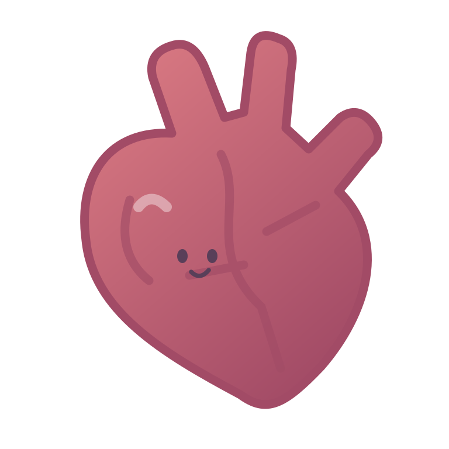

O
+
THE LITTLE ORGAN LAB
合成大器官
医学社团特别企划
声音 关
本局得分
0
下一个
ORGAN LAB
碰一碰，发现新可能
堆叠警戒线
一场可爱的身体探索

准备好，合成了吗？
左右移动瞄准，松手投放。
两个相同器官相碰，就会升级。
开始研究
→
不限时 · 无广告 · 成绩仅保留本局
本次研究圆满结束
游戏结束
本局最终得分
0
请向现场工作人员
展示此页面领取奖励
再玩一次
↻
分数以本页为准 · 重新开始后清零
开始新的研究？
本局分数和器官将清空。
确认重新开始
继续本局
准备开始研究
重新开始 ↻